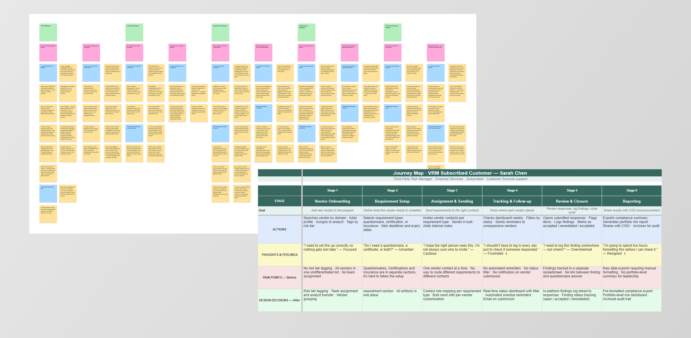
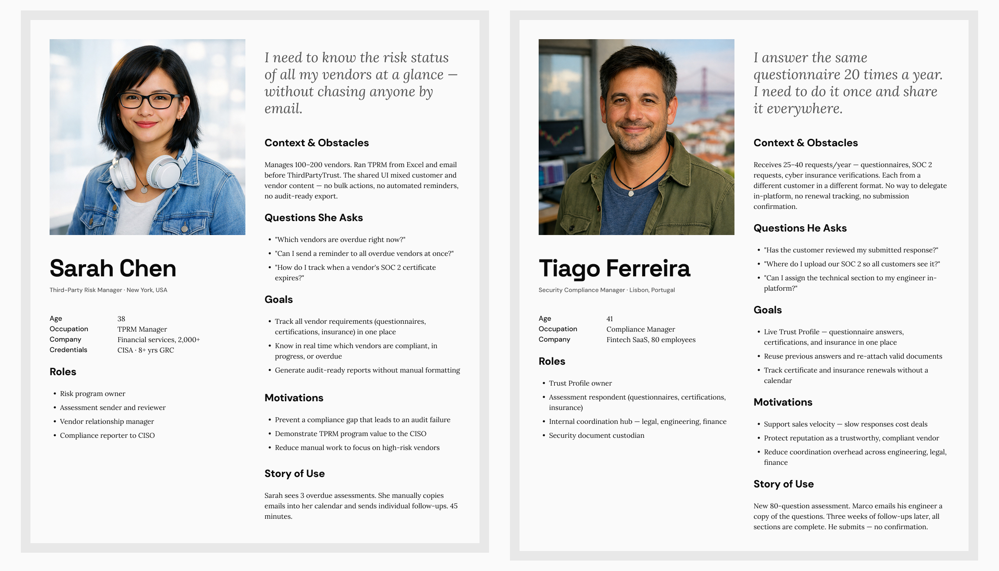
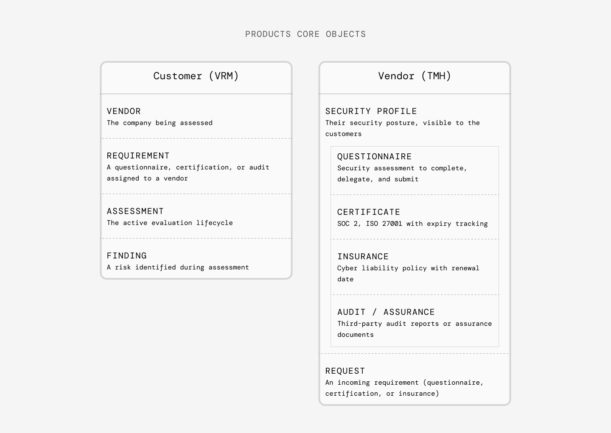
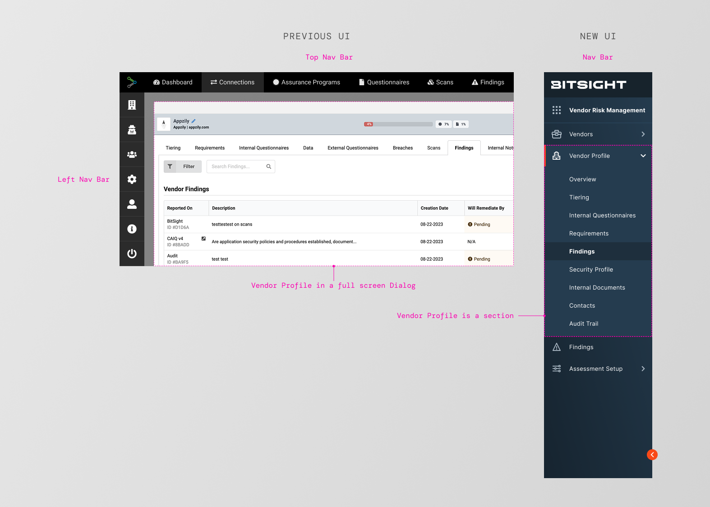
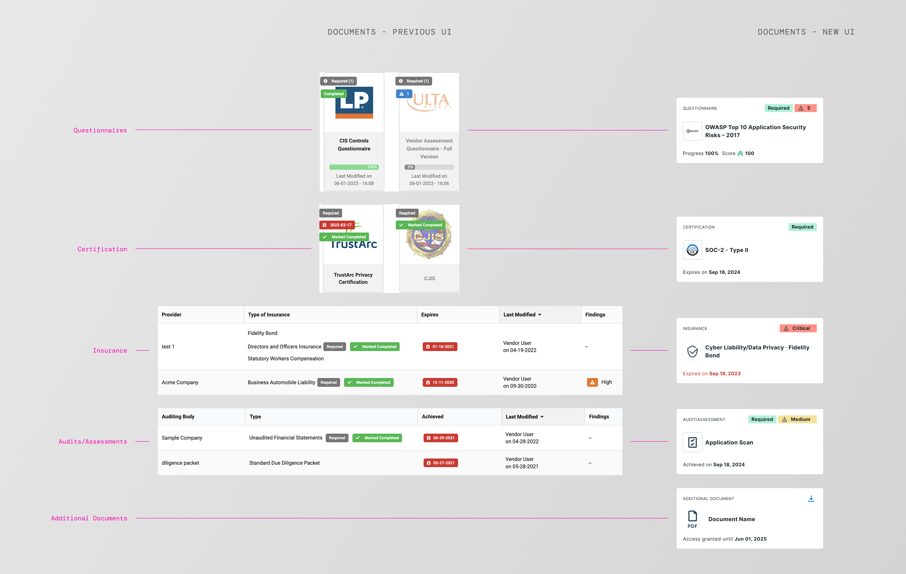
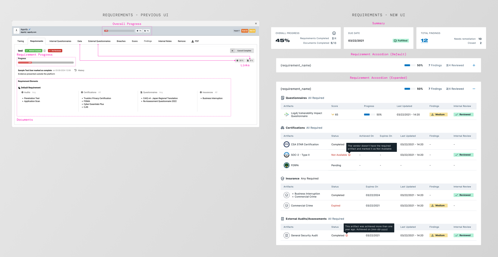

ThirdPartyTrust served two completely different user types in one shared UI. I led the research that defined 4 personas, ran affinity diagramming sessions across teams, and drove the decision to split the product into two dedicated products — Bitsight VRM and TMH.
A platform built without a design team
ThirdPartyTrust is a third-party risk management (TPRM) platform. Before Bitsight acquired it in Q3 2021, it had been built entirely by engineers — solid technically, but without a user-centered design process from the start.
When I joined, there was no UX team, no research infrastructure, and no clear picture of who was actually using the product. Two completely different user types — customers (companies managing vendor risk) and vendors (companies being assessed) — were navigating the same interface, with the same navigation, even though their goals had almost nothing in common.
The signal was already there: a high volume of support tickets, no subscription support for many users, no way to distinguish what was a usability problem from what was a feature gap. My job was to build the process to read the signal — and then act on it.
Once the product split into two teams, I landed on VRM, the customer-facing side. I kept working closely with the TMH team throughout, since I carried the product context forward from the original ThirdPartyTrust platform, back when both experiences still lived in one codebase and one team.
Two users. One navigation. Zero clarity.
The platform's core problem wasn't any single broken feature. It was structural: customers and vendors were forced to share the same mental model of the product, even though they were there for completely different reasons.
The top bar and left sidebar served both user types at once. Customers looking for their vendor list and vendors looking for their pending assessments landed in the same place — with no clear path forward.
Users couldn't tell if an action had succeeded. No confirmation after sending a questionnaire. No status on submitted responses. Empty screens with no guidance on what to do next.
Users without a subscription had no support channel. Their frustration generated support tickets — but without research, there was no way to distinguish a usability problem from a missing feature.
Understanding two different worlds
The research goal was exploratory: understand how each user type thought about their work, what they needed from the platform, and where the experience was breaking down. I used three methods, each chosen for a specific purpose.
To understand motivations, mental models, and day-to-day workflows. I talked to subscribed and unsubscribed users on both sides — customers and vendors. The goal was to hear how they described their own work before asking how the product fit into it.
To synthesize observations across participants and surface shared themes. I ran sessions with the VRM and TMH teams together — so the findings weren't just mine. They became a shared understanding across the two product teams.
To validate the new IA after the product split decision was made. Testing whether users could navigate the new structure before committing to building it.
Who I talked to
Not all users had equal weight in driving decisions. I defined 2 primary and 2 secondary personas based on subscription status, engagement level, and signal strength from support data.
| Participants | User type | Subscription | Support access | Priority |
|---|---|---|---|---|
| Carlos, Emma | Customer | Yes | Customer Success team | Primary |
| Lucas, Priya | Vendor | Yes | Customer Success team | Primary |
| Tom, Ana | Customer | No | None | Secondary |
| David, Nina | Vendor | No | None | Secondary |

Affinity diagram and Journey map — User research findings
Four people. Two sides of the same platform.
Primary personas drove design decisions. Secondary personas revealed where the experience was silently failing. Both were necessary — subscribed users showed the potential; unsubscribed users showed the cracks.

Sarah Chen and Tiago Ferreira — two primary personas representing different sides of the platform.
What the affinity diagram surfaced
After clustering observations across all participants, five themes emerged consistently. Each one became a design principle for the new IA.
Customers were running risk programs from spreadsheets alongside the platform. Vendors were copy-pasting the same answers into different tools.
Neither user type felt the platform was built for their context. Customers needed control over risk criteria. Vendors needed control over their profile.
Both sides described their work as inherently cross-functional. Customers coordinated with internal security teams. Vendors coordinated across legal, engineering, and finance.
Manual repetitive work was the biggest source of frustration on both sides: chasing vendors, tracking progress in spreadsheets, re-sending the same documents.
Users couldn't orient themselves. A customer looking for their vendor list and a vendor looking for their active assessments ended up in the same place. Navigation was the symptom. The cause was structural: the platform had no conceptual model that matched how either user thought about their work.
Objects first, not features
The research revealed something deeper than a usability problem. Customers and vendors weren't just different personas — they were operating with fundamentally different conceptual objects. Merging them in the same navigation was the root cause of the confusion.

Core objects — Customers and Vendors
These two object sets didn't overlap at all. Sharing a navigation between them was the root cause — not a symptom. The IA decision followed directly: split the products. VRM for customers. TMH for vendors.
Before & after
ThirdPartyTrust used a dual navigation — a top bar for primary sections and a context-sensitive left sidebar. The redesign moved to a single left sidebar per product, each organized around its own object model.
Before — ThirdPartyTrust
Top navigation bar + context-sensitive left sidebar. Both user types shared the same primary nav. The sidebar changed depending on which section you were in, but both customers and vendors saw the same top-level structure.
After — Bitsight VRM + TMH
Two separate products. Each with a single left sidebar organized around its own core objects. Customers navigate Vendors, Assessments, and Findings. Vendors navigate Profile, Requests, and Certificates.

New information architecture — Before and After
Inside the customer-facing product, that same "objects, not features" thinking went one level deeper. In the old UI, opening a vendor meant launching a full-screen dialog with its own internal tab bar (Tiering, Requirements, Data, and several more), a completely separate navigation paradigm bolted onto a global top bar and an unlabeled icon-only sidebar. There was no URL-level "you are here," no way to tell from the nav that you were even inside a vendor. The redesign folded Vendor Profile into a single, unified left sidebar as a real nested section. Overview, Tiering, Requirements, and the rest each became genuine nav destinations with persistent context and an active-state indicator, instead of tabs trapped inside a modal.

Vendor Profile moves from a full-screen dialog disconnected from the main nav to a nested section inside one unified sidebar. Every former tab becomes a real, addressable destination.
The same object pattern, reused twice
Once Vendor was modeled as an object with defined sub-pages, two of those sub-pages, Security Profile and Requirements, got redesigned around the same underlying idea: stop treating each artifact type as its own UI pattern, and start treating every artifact as an instance of the same object, a requirement with a status. These two are only a sample. The same redesign process touched many more sections across the integration; Security Profile and Requirements are shown here because they illustrate the pattern most clearly.
The two pages answer different questions, even though they end up looking similar. Security Profile is the vendor's side of the relationship: everything a vendor has published and shared, built once on their own Trust Management Hub profile, which can include more than what's strictly required. Requirements is the customer's side: the specific checklist of artifacts a customer's program actually requires from that vendor. Both views below are the customer's, a reviewer looking first at everything a vendor shared, then at their own requirement checklist mapped against it.
Security Profile — what a vendor has shared
On ThirdPartyTrust, a vendor's shared documentation didn't even live in one place for the reviewer. It was split across two separate sections, Assurance Program and Questionnaires, each with its own navigation and its own UI pattern: large cards with logo thumbnails for Questionnaires and Certifications, plain tables for Insurance and Audits/Assessments. Metadata was buried under visual noise, and nothing looked consistent from one section to the next, let alone between the two sections. The redesign merged both into a single Security Program section and collapsed all four object types into one list component: one row per item, a type label, a status chip, and inline metadata, color-coded by severity instead of by object type. A Required chip marks which of the vendor's shared items actually satisfy a requirement, since vendors often share more than what's asked for. The information got easier to scan for two reasons at once: it stopped pretending to be four different things, and it stopped being split across two pages.

Security Profile — four inconsistent card/table patterns become one unified list component, one row per shared artifact, with a chip marking which ones are actually required.
Security Profile — the redesign in action
Requirements — reviewer's view
The Requirements page took that same row pattern and reused it a level up, but the bigger problem here wasn't visual inconsistency: the tab couldn't do anything. Requirements lived inside a giant modal packed with tabs (Tiering, Data, External Questionnaires, and others), and the Requirements tab itself was read-only. It could only tell a reviewer what was required, not let them act on it. To actually review a questionnaire response or a piece of documentation, the reviewer had to leave the tab entirely, jump over to Data or External Questionnaires, do the review there, and come back, repeating that trip for every artifact in every requirement.
The redesign made Requirements fully actionable. Questionnaires and documentation can now be reviewed inline, without leaving the page: questionnaires open directly in the row, and documentation opens in a side sheet, so a reviewer never has to go hunting through other tabs to do the work the Requirements page is supposed to support. The accordion, the summary, and the per-artifact status all sit on top of that one change. Review happens where the requirement lives, not somewhere else.

Requirements — from a read-only tab that sent reviewers back and forth to Data and External Questionnaires, to a fully actionable view with inline questionnaire review and document sheets.
Requirements — the redesign in action
The through-line across all three: define the object once, a requirement with a status, and reuse it everywhere it shows up, in a single artifact row, in an accordion of requirements, and in the nav hierarchy that gets you there.

From questionnaire review to AI-powered SOC2 analysis
During this project, I participated in an internal hackathon exploring generative AI within the Bitsight product. The idea: instead of manually reviewing SOC2 Type II reports, a process that could take hours, use AI to extract, analyze, and summarize the contents into actionable insights. The hackathon prototype was compelling enough to become a real product, Instant Insights, in the Vendor Risk Management application. Manual review time went from hours to minutes.
What shipped. What changed.
Before any of the structural redesign work began, the very first patch shipped on ThirdPartyTrust was smaller: setting up Pendo guides for user onboarding. Those guides carried over when the platform moved to Bitsight and are still in use today.
Feedback patterns, standardized
The "No system feedback" problem identified early on (section 02) had a simple root cause: there was no shared vocabulary for how the product talked back to users. The redesign closed that gap by building a feedback pattern library into Bitsight DS, covering the four states every screen needs to account for. It's now a checklist I run on every design, so none of the four get forgotten.
Empty states
What a user sees before there's any data: guidance on what to do next, not a blank screen.
Loading & progress states
Confirms an action is in motion, so users aren't left wondering if a click registered.
Success confirmation
A clear signal that an action completed. Sending a questionnaire now visibly succeeds.
Inline errors
Errors surface next to the field or action that caused them, not in a disconnected banner.

The four-state checklist, kept close at hand on every project since.
What I'd do differently
-
Run tree testing before committing to the split
The product split decision was driven by research — but we validated it with usability studies after the decision was made. Running a quick tree test earlier would have given us structural confidence before committing, and would have reduced risk at the most critical point of the project.
-
Reach secondary personas earlier
Unsubscribed users — Diana and James — turned out to be the clearest signal of where the platform was silently failing. But because they had no support relationship, they were harder to recruit. I'd invest more in reaching them early in any future project where there's a free-tier or low-access user type.
-
Use the affinity diagram as a kickoff, not a synthesis
The cross-team affinity session was one of the most valuable moments of the project. VRM and TMH stakeholders building the diagram together — instead of receiving a report — meant they owned the insights. I'd use this format at the start of the research phase, not just at the end.
-
IA decisions precede UI changes
The rename from "Connections" to "Vendors," and the move from dual navigation to a single sidebar — these were IA decisions first, UI decisions second. I'd be more explicit about documenting that sequence, so the team understands what's driving what.